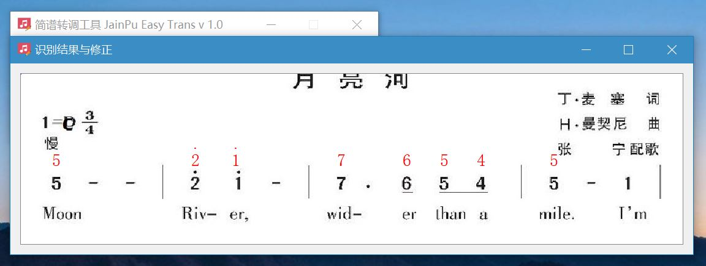
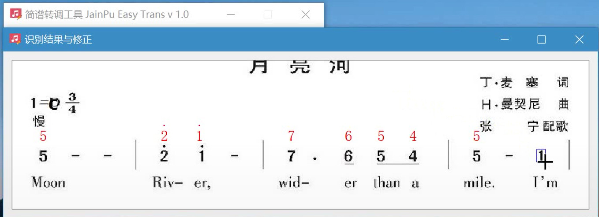
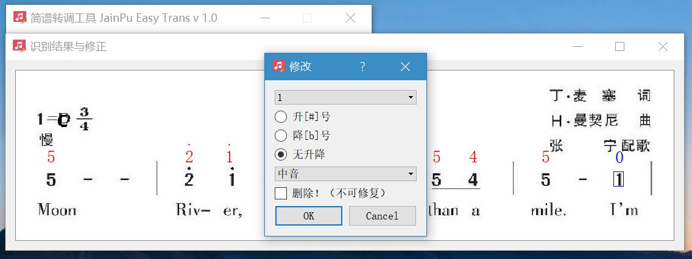
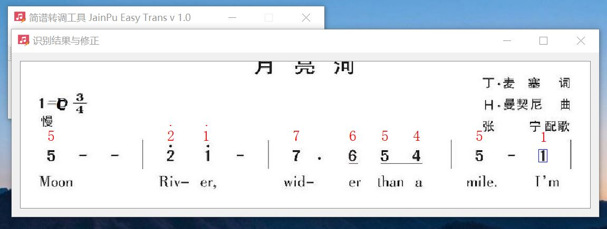

从网上下载的简谱的调经常与我们的乐器的调不同，这时就需要进行转调（能直接在脑海中完成转调的大神请忽略）。如半音口琴太多为C调，而从网上下载的简谱大多为非C调，若想匹配背景旋律，需要将简谱转为C调。虽然可根据乐理知识转换为我们想要的调，但手动转调非常耗时且麻烦。网上搜索简谱转调软件，需要手动一个一个地输入音符，仍较为耗时，且丢失了曲谱的节奏信息。下面介绍一下自己编的简谱转调软件，希望大家多支持。
暂命名为：“简谱转调工具 Jianpu Easy Trans”。
使用简介：输入简谱图片，选择曲谱原调和希望转出的调，然后导出转调后的结果。（结果为图片，保留了原节奏和歌词等信息）
此时工具栏中所有的按钮均为灰色

选择 文件--打开简谱图片

这里打开的样例简谱图片为[link]：

导入图片之后，工具栏中部分按钮变为可用状态

在下拉选项中设置“原调”与“转调”。设置好后，此时还不能导出转调后的结果 ，需要对原简谱进行识别。
点击绿色的“识别”按钮，对原简谱进行识别（识别时间依根据图像大小而定，约2分钟内）。

点击工具栏的“导出”按钮，将会弹出保存文件对话框，选择保存路径保存即可！

下图即为转调后的结果。

可以看到，转调后的简谱图片的最上方有转调的提示（原调D，转调C），如果觉得这样还不够，可以自行用window的"画图"软件修改，如下。修改完成后保存即可

>------------------------------------------------------------------------<
前面的步骤说明，进行转调时，首先要进行图像中音符的识别。
而识别的准确度，直接影响了转调后的简谱的正确性。但目前各种图像识别算法还不能做到 100 % 的准确。（针对简谱的音符特点，对算法做了优化，上面的简谱转调的例子的识别结果完全正确， ^_^||| ）。为了保证转调结果的准确性，添加了误识别音符的修改功能。
大家注意到在“导出”按钮左侧的“修正”按钮。
打开另外一张简谱，重复以上步骤1-3，然后点击“修正”按钮。

这时将会弹出修正简谱界面，如下。每个音符的识别结果，将会在音符的正上方以红色字体显示。

注意到第三行的，低音7被错误识别为中音7，需要进行修正。
用鼠标左键点击被识别错误的7（选中后，选中的7将有蓝色边框标识，同时识别的音符将变为蓝色）。此时将弹出修改对话框，如下。

在修改对框，在下拉选项中将“中音”改为“低音”。然后点确定。即可修改完成，修改结果如下。

另外，注意到第二行的“4/4”是节拍号，并不是音符，需要将其删除。
鼠标左键选中上侧的“4”，在弹出的修改对话框中选中“删除”，然后点“确定”按钮。这个多出来的4就被删除了！下边“4”也可按照同样方法删除！

删除后,结果如下

按照这样的方法修正识别的结果，确定没有错误就可以将转调结果导出了（导出见步骤4）
等等，要是有音符没有识别出来怎么办，或者音符被识删除了呢。虽然这种情况比较少，但程序还是考虑了这一情况。
如下图，在音符“识别”过程结束后，点击“修正”，发现有一个音符“1”没有识别出来。需要添加一个音符。
鼠标放到识别结果界面，按住"Shift"键，同时按下鼠标左键。此时，鼠标会变成“+”，同时在鼠标左上侧会出现一个蓝色矩形。并且，蓝色框会随鼠标移动。

按住“Shift”键和鼠标左键，拖动这个蓝框到音符“1”，使蓝框能框选住“1”，如下
鼠标松开鼠标左键，将会弹出之前的“修改”对话框，可在此对话框中设置需要添加的音符信息。这里分别选择：“1”、无升降、中音。
（注意拖动鼠标时不要松开“Shift”，框选住音符“1”，松开鼠标,弹出修改后，即可松开Shift。）
设置好后，点击“确定”，即可完成音符添加操作，结果如下
如对音符添加还不理解这里有一个视频[Link]
>=============================================<
总结：此软件首先需要正确识别简谱中的音符，由于音符识别不能做到100 %的准确。因此采用人工辅助复查的方式，以保证转调前的音符识别结果是正确的。而音符转调过程完全交由系统自动完成。
相对手工改谱转调，大提升了转调的效率，平均一张简谱转调耗时不会超过5分钟（加上图像识别的时间）。